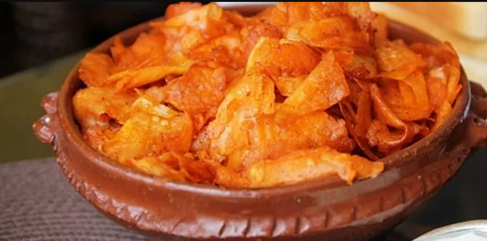

CHECHEBSA

Chechebsa, also known as Kita Firfir, is a traditional Ethiopian dish that is commonly enjoyed for breakfast.
It consists of torn pieces of flatbread mixed with spiced butter and berbere, a flavorful Ethiopian spice mix.
Chechebsa is a hearty and flavorful dish that combines the vibrant flavors of Ethiopia with a rich history
of culture and tradition.
for Chechebsa:
- 2 cups (250 grams) all-purpose flour
- 1/2 teaspoon salt
- 2 cups (470 milliliters) water
- Oil for greasing the pan
- 1/3 cup (70 grams) Niter Kibbeh (Ethiopian clarified butter)
- 1 tablespoon Berbere
- Plain yogurt
- Honey for drizzling
- Scrambled eggs
Steps to make Chechebsa:
- In a large bowl, whisk together the flour and salt.
- Gradually add water to the flour mixture while whisking until you have a smooth batter with no streaks of flour remaining.
- Heat a large non-stick pan over medium heat and lightly grease it with oil.
- Pour a ladle-full (about 1/2 cup, 120 milliliters) of the batter into the hot pan, tilting the pan to form a thin, even circle.
- Cook the flatbread until lightly golden on the bottom and set on the top, which takes about 2-4 minutes. Then flip the bread and cook the other side until golden.
- Remove the cooked flatbread to a plate and repeat the process with the remaining batter.
- While the flatbread is cooking, melt the Niter Kibbeh (spiced butter) in a small pot over medium heat.
- Stir in the Berbere and continue to cook for a couple of minutes to allow the flavors to blend. Remove from heat and set aside.
- Once the flatbread has cooled down a bit, tear it into bite-sized pieces and place them in a large bowl.
- Pour the spiced butter mixture over the torn flatbread and use a fork to toss them together thoroughly.
- Serve the Chechebsa immediately with plain yogurt, a drizzle of honey, and scrambled eggs if desired.
Go back to Top
back to main